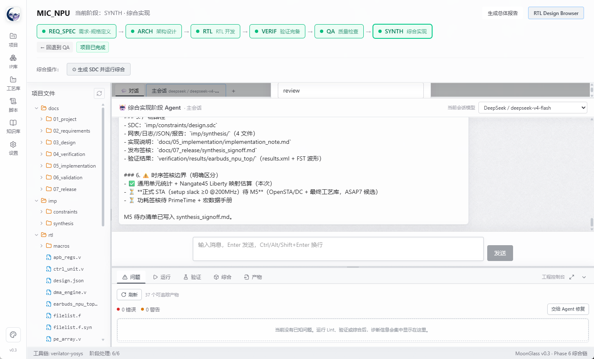
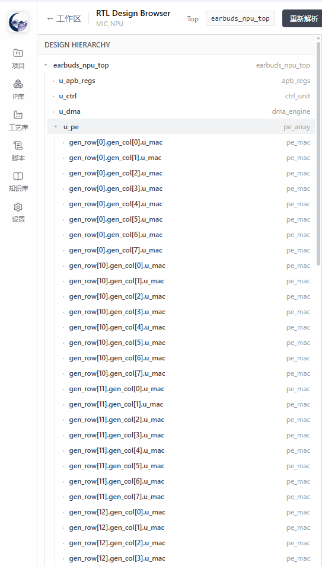
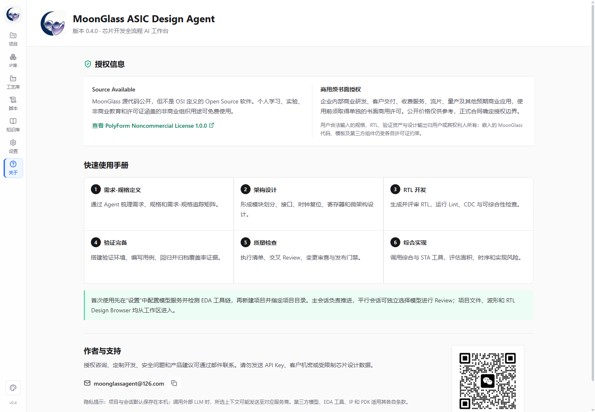

一句话理解 MoonGlass：你告诉 Agent 要做什么，MoonGlass 负责把规格、架构、RTL、验证、质量检查和综合结果组织在同一个项目里，并保留每一步的过程与证据。
开放研究与社区讨论：阅读《从代码生成到工程签核：面向 ASIC IP 开发的证据驱动型人机协同 Agent 工作流》，了解 MoonGlass 开发中发现的问题、当前方法、评价指标与开放研究议程。
一、5 分钟上手
1. 解压完整解压绿色版 ZIP，不要直接在压缩包里运行。
2. 启动双击
MoonGlass.exe 或 Start-MoonGlass.bat。3. 配模型进入“设置”，添加 Provider、API Key 和模型，点击测试。
4. 建项目选择“新建项目”，填写名称并指定工程目录。
5. 说需求在主会话输入 IP 目标、接口、性能、时钟复位和交付要求。
6. 推阶段检查本阶段产物，点击推进；也可使用“一键托管”。
最容易犯的错误：只打开 ZIP、不完整解压；模型填完却没有点击“测试”；让 Agent 开发但没有提供时钟、复位、接口和验收标准。
二、第一次配置模型
- 点击左侧“设置”。
- 选择模型服务商，填写 API Key、Base URL（服务商要求时）和模型名称。
- 点击“测试连接”，看到成功提示后保存。
- 回到项目，在主会话右上角选择模型。平行会话可以选择另一个模型做交叉 Review。
提示“请配置模型服务”怎么办？确认当前会话右上角已选模型，再回设置页执行一次“测试连接”。配置属于当前电脑，不会随绿色版 ZIP 带到另一台电脑。
安全原则：不要把 API Key 写进项目文档、Prompt 或 Git 仓库。MoonGlass 发布包不预置用户 API Key。
三、新建项目或导入已有项目
新项目
- 项目页点击“新建项目”。
- 填写项目名称、Top 名称等基本信息。
- 选择工程目录。建议路径简短，避免中文、空格和特殊符号。
- 创建后进入 REQ_SPEC 需求-规格定义阶段。
已有项目
- 点击“导入项目”，选择原工程目录。
- 等待 MoonGlass 扫描文档、RTL、验证、QA 和综合证据。
- 查看建议恢复阶段和识别依据，确认后导入。
- 分析结果写入
docs/01_project/import_assessment.md，原文件树不会被强制改造。
自动判断是建议，不是签核结论。导入后先核对阶段、Top、filelist、测试和综合证据。
四、六阶段怎么走
REQ_SPEC 需求-规格定义 → ARCH 架构设计 → RTL RTL 开发
↓
SYNTH 综合实现 ← QA 质量检查 ← VERIF 验证完备
| 阶段 | 你主要说什么 | 应看到的核心结果 |
|---|---|---|
| REQ_SPEC | 功能、接口、性能、时钟复位、异常行为、验收标准 | 需求/规格文档、需求-规格矩阵 |
| ARCH | 模块划分、数据流、寄存器、CDC、存储器、吞吐与延迟 | 架构、接口、寄存器、时钟复位方案 |
| RTL | 编码规范、可综合约束、目标工具、复用 IP | RTL、filelist、Lint/编译结果 |
| VERIF | 验证计划、测试场景、参考模型、覆盖率目标 | Testbench、用例、回归和覆盖率报告 |
| QA | Review 清单、追踪完整性、豁免、遗留风险 | 检查表、Review 记录、签核材料 |
| SYNTH | 工艺/库、时钟、约束、面积和时序目标 | SDC、综合日志、面积/时序报告 |

推进原则：先看 Agent 做了什么，再检查文件和工具结果，最后推进。黄色感叹号表示前序变更影响了这个已完成阶段，需要响应。
五、怎样和 Agent 对话
推荐的第一条消息
请开发一个【IP 名称】。接口为【AXI/APB/自定义接口】，数据宽度【】位，地址宽度【】位，目标频率【】MHz，时钟与复位为【】，需要支持【功能列表】，异常情况下【期望行为】，交付包括【RTL/Testbench/文档/报告】。不确定项先列出让我确认。
主会话与平行会话
- 主会话：持续推进当前阶段，保持主要设计上下文。
- 平行会话：用另一模型做架构 Review、RTL Review、验证完备性检查或独立定位 Bug。
- 多个确认项出现时，全部选择完成后再提交。
- 思考过程、工具调用和结果流式显示；工具失败项默认展开。
中止并非“断电”。点击中止后 Agent 会停止当前任务；外部 EDA 进程可能需要几秒清理。
六、一键托管
- 在项目工作区点击“一键托管”。
- 选择从当前阶段自动推进到哪个阶段。
- 确认范围后，MoonGlass 自动调用 Agent、处理推荐选择、执行门禁和有限次数修复重试。
- 结束后检查完整报告中的失败、豁免、未完成项和工具证据。
托管不等于无人签核。门禁持续失败时会停止，不会强行标绿。架构取舍、第三方许可、CDC/RDC、覆盖率豁免、时序和流片签核必须由工程负责人确认。
七、项目后期改需求或修 Bug
- 点击“发起变更”，写清需求修改、规格修改或第三方 Bug。
- 选择最早受影响阶段。
- 系统保留已有结果，并给完成过的受影响阶段加黄色提醒。
- 逐阶段更新规格/架构、修改 RTL、回归验证、QA 变更审查和重新综合。
- 也可从变更起点启动一键托管，最终报告仍需人工审查。
不要删除旧报告来“重新开始”。保留前后证据，才能回答改了什么、影响什么、验证了什么。
八、导入并使用 IP 库
- 进入“IP 库”，填写库名称、类型和目标目录。
- 导入后让 MoonGlass 递归发现 RTL IP、VIP、BFM 和验证组件。
- 需要时运行 Pi 语义增强，补充协议、接口角色、用途和置信度。
- 架构、RTL 和验证阶段可让 Agent 优先检索库内资源；不满足规格时可以不用。
建立索引不代表 IP 已通过当前项目的功能、工艺、时序、许可和质量审查。
九、文件、RTL 层次与波形
- 双击文本或 RTL 文件，在右侧查看行号和语法高亮；可切换自动换行、字号并复制。
- 点击 RTL Design Browser，选择 Top 并解析层次；大型工程首次解析会较慢。
- 双击
.fst或.vcd调用 GTKWave。GTKWave 必须已安装且能从命令行启动。

十、常见问题
429 engine overloaded 是什么？
模型服务商当前过载，不是项目损坏。稍后重试，或切换模型/Provider。
点击会话或文件后很久才打开
可能是 Agent 流式任务、超大文件或后台解析占用。先等待当前工具调用结束；必要时中止任务，再切换。
GTKWave 提示已打开，但没有窗口
先在 PowerShell 测试 gtkwave 完整波形路径.fst，再检查 FST 支持、PATH、文件和路径权限。
工具包装了但仍显示未找到
刷新或重新检测工具链，确认可执行文件在 PATH 中；部分工具安装后需重启 MoonGlass。
导入项目阶段判断不准确
查看 import_assessment.md 的证据，人工调整阶段，并补充报告、filelist 或目录映射。
换电脑后模型配置不见了
模型配置保存在本机，绿色版不包含 API Key。新电脑需要重新配置模型服务。
十一、交付前最小检查表
- 需求-规格矩阵能追到设计项、测试项和质量证据。
- RTL 编译、Lint、仿真和回归结果可重复。
- 关键场景、异常场景、边界条件和覆盖率已检查。
- 黄色变更提醒已响应，遗留问题有豁免和责任人。
- 综合约束正确，面积/时序报告与目标一致。
- 第三方 IP、模型和工具许可证满足实际用途。
